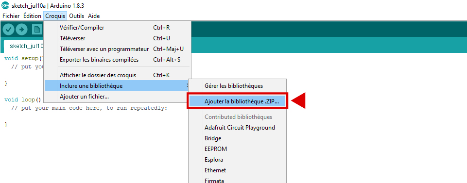
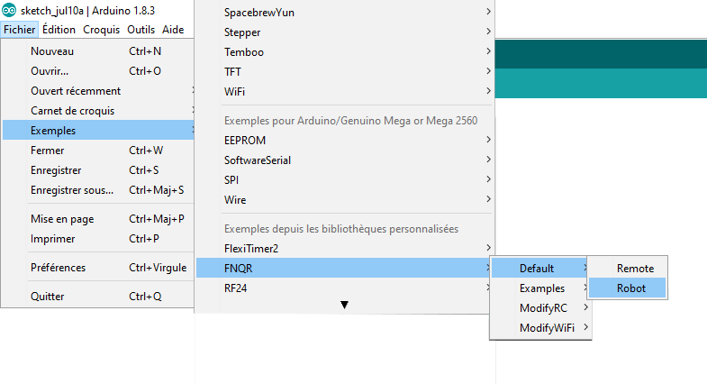
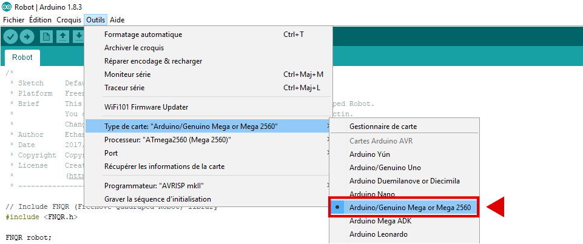
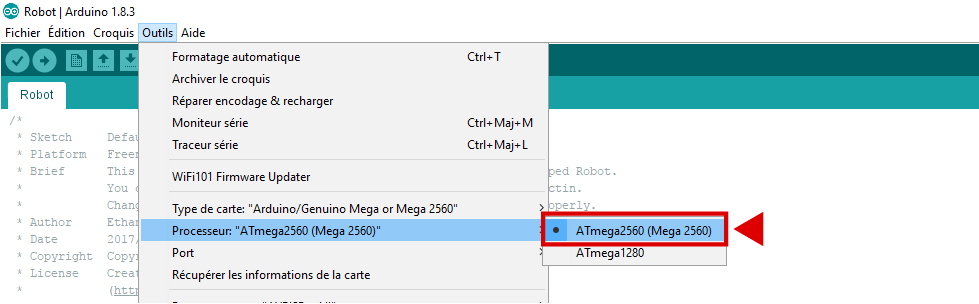
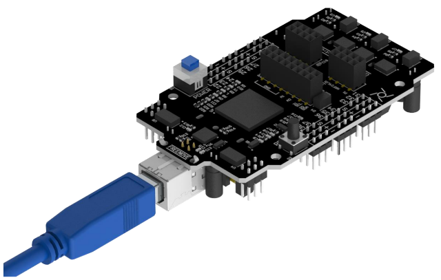
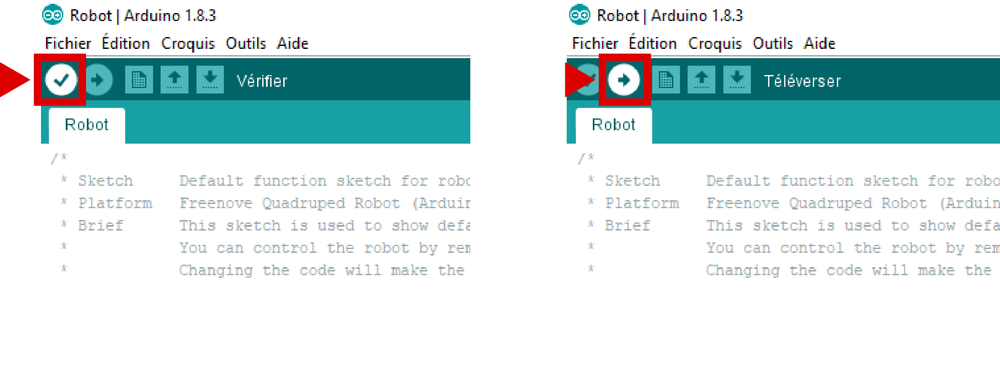
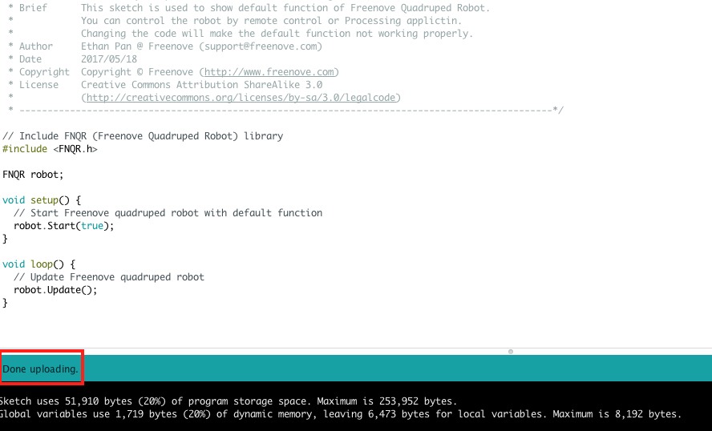

Arduino and Genuino are electronic boards based on Atmel AVR or ARM microcontrollers. These boards can be programmed to perform many tasks: home automation, robotics, embedded computing etc. The programming is done using the Arduino IDE (integrated development environment).
To run the quadruped robot you need to install dedicated libraries: these libraries allow you to add a set of functions to the arduino IDE.
Launch Arduino IDE then click sketch> include a library> add the .ZIP library

Add one by one all the .ZIP files in the MakersAcademy_Quadruped_Robot_Kit-master> Arduino> Libraries folder
Repeat for each file in the folder.
You must now be able to locate the FlexiTimer2, FNQR, RF24, and WeeESP8266 libraries in your Arduino IDE, to verify you can click on: Sketch> Include a library
Open the Robot file in File > examples > FNQR > Default > Robot
Choose Arduino/Genuino Mega or Mega 2560 as board type in Tools> Board type
Then select ATmega2560 in Tools > Processor
Connect the USB controller to your computer

Choose the USB port on which your card is connected: Tools > Port
On the image following, the port used is COM4, it is possible that your port number is different:
choose the one on which the name of your card appears (Arduino / Genuino Mega or Mega 2560)
Then check and upload the sketch on the map.
 The code uploaded, you can now disconnect the board and go to the next step.